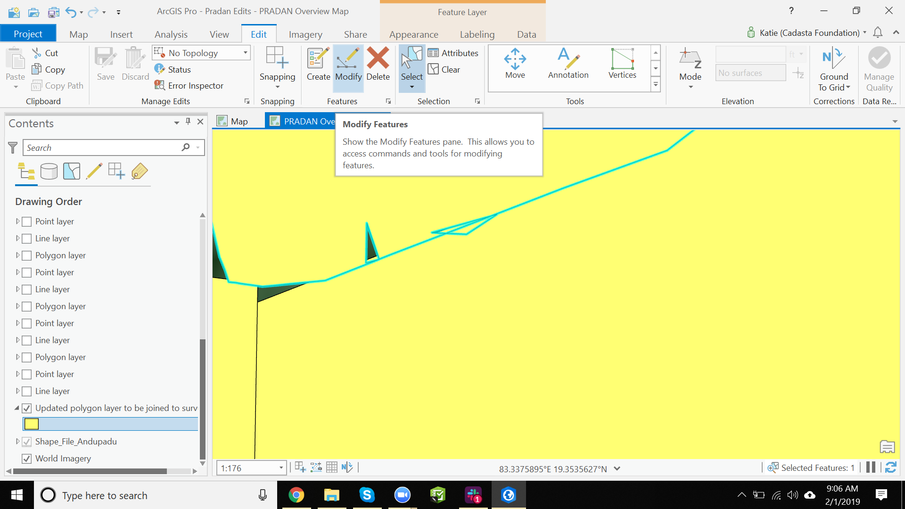
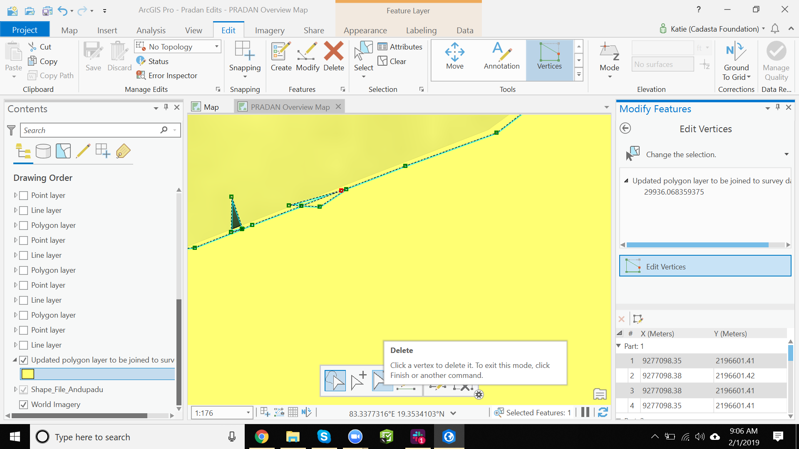

Purpose
This page will explain how to delete vertices of your polygon in ArcGIS Pro
Requirements
- You will need to have a username and password set up for you by a Cadasta team member. If you do not have a user please contact support@cadasta.org
- You will need to sign to your account - see Introduction to your account for a reminder
- You will need to have an Esri license for ArcGIS Pro and have it installed on your workstation
- You will need to be a member of the group in which the feature has been shared.
Steps
- Open ArcGIS Pro and open the project in which you have the polygons you want to edit
- In the "Map" tab, press the "Select" button and then select the polygon you wish to edit
- Select the "Edit" tab

- In the "Edit" tab, press the "Modify" button 
- In the "Edit" tab -> "Tools" section, press the "Vertices" button

- Press the "Delete" button and the select the vertices in the map that you want to delete 
- Press the "Finish" button